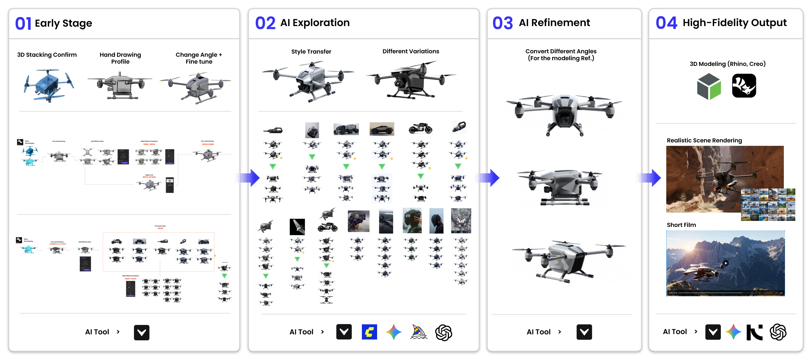
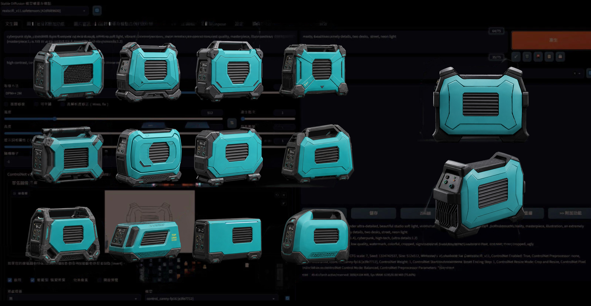
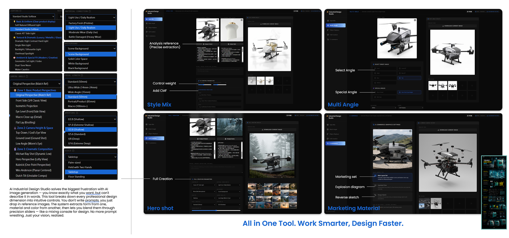
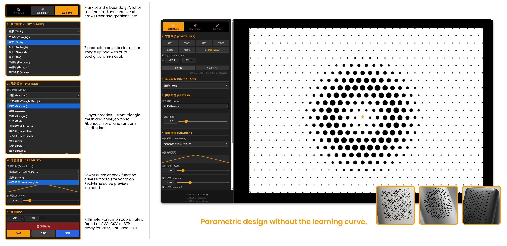

AI Tool Kit

Since 2022, I have deeply integrated AI into my design workflow. From early-stage conceptual ideation and complex parametric design to high-fidelity contextual synthesis and stylistic layout, AI has become a core part of my workflow. The implementation of these technologies not only optimizes development efficiency but also empowers me to elevate both the visual and physical quality of my work to new heights with absolute precision.

A complete pipeline covering every phase of industrial design. Stage 1 locks in form through 3D stacking, hand-drawn profiles, and quick angle adjustments. Stage 2 enters AI Exploration with style transfer and variant generation, massively expanding the design space. Stage 3 uses AI Refinement to produce multi-angle consistent views ready to serve as modeling references. Stage 4 delivers high-fidelity output — 3D modeling in Rhino and Creo, realistic scene rendering, and short films. Each stage is powered by purpose-matched AI tools, so designers focus on decisions, not repetitive labor.


AI Industrial Design Studio solves the biggest frustration with AI image generation — you know exactly what you want, but can't describe it in words. This tool breaks down every professional design dimension into intuitive controls. You don't write prompts, you just drop in reference images. The system extracts form from one, material and color from another, then lets you blend them through precision sliders — like a mixing console for design. No more prompt wrestling. Just your vision, realized.

Grasshopper is powerful — but its node-based logic, scripting dependencies, and steep learning curve turn a simple pattern idea into hours of troubleshooting. This tool strips all of that away. Pick a shape, choose a layout, drag a gradient curve, and watch your pattern come to life in real time. 11 layout modes from diamond and honeycomb to Fibonacci spiral. Smooth size gradients driven by intuitive Power and Peak/Ring curves. Millimeter-precision output exported as SVG, CSV, or STP — ready for laser, CNC, and CAD. The gradient patterns you've always wanted to make in Grasshopper, delivered in minutes instead of days.